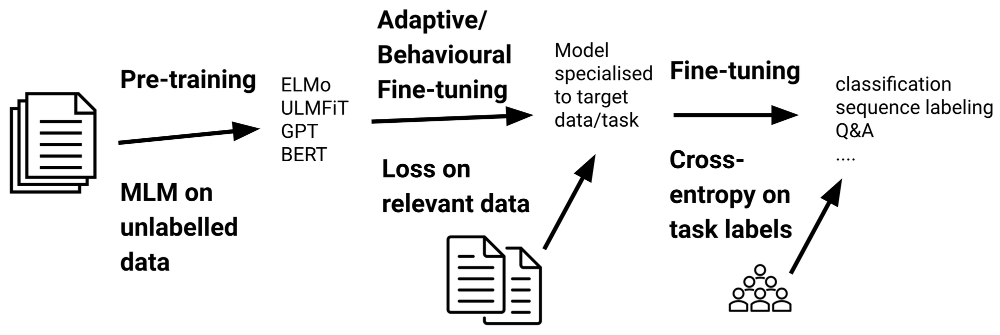

BERTによるセンチメント分析
Contents
BERTによるセンチメント分析#
転移学習とファインチューニング#
転移学習は、あるタスクの学習で得られた知識を、他の関連するタスクの学習に適用する手法を指します。一般的には、以下のステップで行われることが多いです：
事前学習: 事前学習モデル（pre-trained models)とは、大規模なデータセットを用いて訓練した学習済みモデルのことです。一般的に、大量のデータ（例えば、インターネット上のテキストデータ）を使用して、モデルを事前に学習します。この時点でのモデルは、言語の汎用的な特徴や構造を捉えることができます。
ファインチューニング(fine-tuning): 事前学習モデルを、特定のタスクのデータ（例えば、感情分析や質問応答）でファインチューニングします。事前学習モデルでは汎用的な特徴をあらかじめ学習しておきますので、手元にある学習データが小規模でも高精度な認識性能を達成することが知られています。

センチメント分析の実装#
!nvidia-smi
zsh:1: command not found: nvidia-smi
データセット#
Hugging Faceからサンプルデータの取得#
Hugging Faceのには色々なデータセットが用意されております。ここでは、多言語のセンチメントデータセットを例として使用することにします。その中に、英語と日本語のサプセットが含まれます。
from datasets import load_dataset
#dataset = load_dataset("tyqiangz/multilingual-sentiments", "japanese")
dataset = load_dataset("tyqiangz/multilingual-sentiments", "english")
サンプルデータの確認#
取得したデータセットの中身を確認します。
データセットはこのようにtrain, validation, testに分かれています。 [‘text’, ‘source’, ‘label’]といった情報を持っています。
dataset
DatasetDict({
train: Dataset({
features: ['text', 'source', 'label'],
num_rows: 1839
})
validation: Dataset({
features: ['text', 'source', 'label'],
num_rows: 324
})
test: Dataset({
features: ['text', 'source', 'label'],
num_rows: 870
})
})
dataset.set_format(type="pandas")
train_df = dataset["train"][:]
train_df.head(5)
| text | source | label | |
|---|---|---|---|
| 0 | okay i\u2019m sorry but TAYLOR SWIFT LOOKS NOT... | sem_eval_2017 | 2 |
| 1 | @user the DC comics site has Batman 44 release... | sem_eval_2017 | 1 |
| 2 | "Frank Gaffrey\u002c Cliff May\u002c Steve Eme... | sem_eval_2017 | 0 |
| 3 | The tragedy of only thinking up hilarious twee... | sem_eval_2017 | 2 |
| 4 | "Oliseh meets with Victor Moses in London: Sup... | sem_eval_2017 | 1 |
dataset["train"].features
{'text': Value(dtype='string', id=None),
'source': Value(dtype='string', id=None),
'label': ClassLabel(names=['positive', 'neutral', 'negative'], id=None)}
import matplotlib.pyplot as plt
train_df["label"].value_counts(ascending=True).plot(kind="barh", title="Train Dataset")
<AxesSubplot:title={'center':'Train Dataset'}>

テキストの確認#
Transformerモデルは、最大コンテキストサイズ(maximum context size)と呼ばれる最大入力系列長があります。
モデルのコンテキストサイズより長いテキストは切り捨てる必要があり、切り捨てたテキストに重要な情報が含まれている場合、性能の低下につながることがあります。
train_df["text_length"]=train_df["text"].str.len()
train_df.boxplot(column="text_length", by="label", figsize=(12, 6))
<AxesSubplot:title={'center':'text_length'}, xlabel='label'>

トークン化#
コンピュータは、入力として生の文字列を受け取ることができません。その代わりに、テキストがトークン化され、数値ベクトルとしてエンコードされていることが想定しています。
トークン化は、文字列をモデルで使用される最小単位に分解するステップです。
Transformerライブラリー は便利なAutoTokenizerクラスを提供しており、事前学習済みモデルに関連つけられたトークナイザーを素早く使用することができます。
トークナイザの動作確認#
from transformers import AutoTokenizer
model_ckpt = "distilbert-base-uncased"
tokenizer = AutoTokenizer.from_pretrained(model_ckpt)
train_df["text"][0]
'okay i\\u2019m sorry but TAYLOR SWIFT LOOKS NOTHING LIKE JACKIE O SO STOP COMPARING THE TWO. c\\u2019mon America aren\\u2019t you sick of her yet? (sorry) '
sample_text_encoded = tokenizer(train_df["text"][0])
sample_text_encoded
{'input_ids': [101, 3100, 1045, 1032, 23343, 24096, 2683, 2213, 3374, 2021, 4202, 9170, 3504, 2498, 2066, 9901, 1051, 2061, 2644, 13599, 1996, 2048, 1012, 1039, 1032, 23343, 24096, 2683, 8202, 2637, 4995, 1032, 23343, 24096, 2683, 2102, 2017, 5305, 1997, 2014, 2664, 1029, 1006, 3374, 1007, 102], 'attention_mask': [1, 1, 1, 1, 1, 1, 1, 1, 1, 1, 1, 1, 1, 1, 1, 1, 1, 1, 1, 1, 1, 1, 1, 1, 1, 1, 1, 1, 1, 1, 1, 1, 1, 1, 1, 1, 1, 1, 1, 1, 1, 1, 1, 1, 1, 1]}
結果にinput_idsとattention_maskが含まれます。
input_ids: 数字にエンコードされたトークン
attention_mask: モデルで有効なトークンかどうかを判別するためのマスクです。無効なトークン（例えば、PADなど）に対しては、attention_maskを として処理します。
各batchにおいて、入力系列はbatch内最大系列長までpaddingされます。

トークナイザの結果は数字にエンコードされているため、トークン文字列を得るには、convert_ids_to_tokensを用います。
文の開始が[CLS]、文の終了が[SEP]という特殊なトークンとなっています。
tokens = tokenizer.convert_ids_to_tokens(sample_text_encoded.input_ids)
print(tokens)
['[CLS]', 'okay', 'i', '\\', 'u2', '##01', '##9', '##m', 'sorry', 'but', 'taylor', 'swift', 'looks', 'nothing', 'like', 'jackie', 'o', 'so', 'stop', 'comparing', 'the', 'two', '.', 'c', '\\', 'u2', '##01', '##9', '##mon', 'america', 'aren', '\\', 'u2', '##01', '##9', '##t', 'you', 'sick', 'of', 'her', 'yet', '?', '(', 'sorry', ')', '[SEP]']
データセット全体のトークン化#
def tokenize(batch):
return tokenizer(batch["text"], padding=True, truncation=True)
dataset.reset_format()
dataset_encoded = dataset.map(tokenize, batched=True, batch_size=None)
huggingface/tokenizers: The current process just got forked, after parallelism has already been used. Disabling parallelism to avoid deadlocks...
To disable this warning, you can either:
- Avoid using `tokenizers` before the fork if possible
- Explicitly set the environment variable TOKENIZERS_PARALLELISM=(true | false)
import pandas as pd
sample_encoded = dataset_encoded["train"][0]
pd.DataFrame(
[sample_encoded["input_ids"]
, sample_encoded["attention_mask"]
, tokenizer.convert_ids_to_tokens(sample_encoded["input_ids"])],
['input_ids', 'attention_mask', "tokens"]
).T
| input_ids | attention_mask | tokens | |
|---|---|---|---|
| 0 | 101 | 1 | [CLS] |
| 1 | 3100 | 1 | okay |
| 2 | 1045 | 1 | i |
| 3 | 1032 | 1 | \ |
| 4 | 23343 | 1 | u2 |
| ... | ... | ... | ... |
| 73 | 0 | 0 | [PAD] |
| 74 | 0 | 0 | [PAD] |
| 75 | 0 | 0 | [PAD] |
| 76 | 0 | 0 | [PAD] |
| 77 | 0 | 0 | [PAD] |
78 rows × 3 columns
分類器の実装#
事前学習モデルの導入#
Transformerライブラリは事前学習モデルの使用ためAutoModelクラスを提供します。
AutoModelクラスはトークンエンコーディングを埋め込みに変換し、エンコーダスタックを経由して最後の隠れ状態を返します。
import torch
from transformers import AutoModel
# GPUある場合はGPUを使う
device = torch.device("cuda" if torch.cuda.is_available() else "cpu")
model = AutoModel.from_pretrained(model_ckpt).to(device)
最初に、文字列をエンコーダしてトークンをPyTorchのテンソルに変換する必要があります。
結果として得られるテンソルは[batch_size,n_tokens]という形状です。
text = "this is a test"
inputs = tokenizer(text, return_tensors="pt")
print(f"Input tensor shape: {inputs['input_ids'].size()}")
Input tensor shape: torch.Size([1, 6])
得られるテンソルをモデルの入力として渡します。
モデルと同じデバイス(GPU or CPU)に設置します。
計算のメモリを減らせるため、
torch.no_grad()で、勾配の自動計算を無効します。出力には隠れ状態、損失、アテンションのオブジェクトが含まれます。
inputs = {k:v.to(device) for k,v in inputs.items()}
with torch.no_grad():
outputs = model(**inputs)
print(outputs)
BaseModelOutput(last_hidden_state=tensor([[[-0.1565, -0.1862, 0.0528, ..., -0.1188, 0.0662, 0.5470],
[-0.3575, -0.6484, -0.0618, ..., -0.3040, 0.3508, 0.5221],
[-0.2772, -0.4459, 0.1818, ..., -0.0948, -0.0076, 0.9958],
[-0.2841, -0.3917, 0.3753, ..., -0.2151, -0.1173, 1.0526],
[ 0.2661, -0.5094, -0.3180, ..., -0.4203, 0.0144, -0.2149],
[ 0.9441, 0.0112, -0.4714, ..., 0.1439, -0.7288, -0.1619]]]), hidden_states=None, attentions=None)
隠れた状態テンソルを見ると、その形状は [batch_size, n_tokens, hidden_dim] であることがわかります。つまり、6つの入力トークンのそれぞれに対して、768次元のベクトルが返されます。
outputs.last_hidden_state.size()
torch.Size([1, 6, 768])
分類タスクでは、[CLS] トークンに関連する隠れた状態を入力特徴として使用するのが一般的な方法です。このトークンは各シーケンスの始まりに現れるため、次のように outputs.last_hidden_state に単純にインデックスを付けることで抽出できます。
outputs.last_hidden_state[:,0].size()
torch.Size([1, 768])
最後の隠れ状態を取得する方法がわかりましたので、データ全体に対して処理を行うため、これまでのステップを関数でまとめます。
そして、データ全体に適用し、すべてのテキストの隠れ状態を抽出します。
def extract_hidden_states(batch):
# Place model inputs on the GPU
inputs = {k:v.to(device) for k,v in batch.items()
if k in tokenizer.model_input_names}
# Extract last hidden states
with torch.no_grad():
last_hidden_state = model(**inputs).last_hidden_state
# Return vector for [CLS] token
return {"hidden_state": last_hidden_state[:,0].cpu().numpy()}
dataset_encoded.set_format(type="torch", columns=["input_ids", "attention_mask","label"])
dataset_hidden=dataset_encoded.map(extract_hidden_states, batched=True, batch_size=16)
---------------------------------------------------------------------------
KeyboardInterrupt Traceback (most recent call last)
Cell In[24], line 1
----> 1 dataset_hidden=dataset_encoded.map(extract_hidden_states, batched=True, batch_size=16)
File /opt/anaconda3/envs/jupyterbook/lib/python3.10/site-packages/datasets/dataset_dict.py:853, in DatasetDict.map(self, function, with_indices, with_rank, input_columns, batched, batch_size, drop_last_batch, remove_columns, keep_in_memory, load_from_cache_file, cache_file_names, writer_batch_size, features, disable_nullable, fn_kwargs, num_proc, desc)
850 if cache_file_names is None:
851 cache_file_names = {k: None for k in self}
852 return DatasetDict(
--> 853 {
854 k: dataset.map(
855 function=function,
856 with_indices=with_indices,
857 with_rank=with_rank,
858 input_columns=input_columns,
859 batched=batched,
860 batch_size=batch_size,
861 drop_last_batch=drop_last_batch,
862 remove_columns=remove_columns,
863 keep_in_memory=keep_in_memory,
864 load_from_cache_file=load_from_cache_file,
865 cache_file_name=cache_file_names[k],
866 writer_batch_size=writer_batch_size,
867 features=features,
868 disable_nullable=disable_nullable,
869 fn_kwargs=fn_kwargs,
870 num_proc=num_proc,
871 desc=desc,
872 )
873 for k, dataset in self.items()
874 }
875 )
File /opt/anaconda3/envs/jupyterbook/lib/python3.10/site-packages/datasets/dataset_dict.py:854, in <dictcomp>(.0)
850 if cache_file_names is None:
851 cache_file_names = {k: None for k in self}
852 return DatasetDict(
853 {
--> 854 k: dataset.map(
855 function=function,
856 with_indices=with_indices,
857 with_rank=with_rank,
858 input_columns=input_columns,
859 batched=batched,
860 batch_size=batch_size,
861 drop_last_batch=drop_last_batch,
862 remove_columns=remove_columns,
863 keep_in_memory=keep_in_memory,
864 load_from_cache_file=load_from_cache_file,
865 cache_file_name=cache_file_names[k],
866 writer_batch_size=writer_batch_size,
867 features=features,
868 disable_nullable=disable_nullable,
869 fn_kwargs=fn_kwargs,
870 num_proc=num_proc,
871 desc=desc,
872 )
873 for k, dataset in self.items()
874 }
875 )
File /opt/anaconda3/envs/jupyterbook/lib/python3.10/site-packages/datasets/arrow_dataset.py:592, in transmit_tasks.<locals>.wrapper(*args, **kwargs)
590 self: "Dataset" = kwargs.pop("self")
591 # apply actual function
--> 592 out: Union["Dataset", "DatasetDict"] = func(self, *args, **kwargs)
593 datasets: List["Dataset"] = list(out.values()) if isinstance(out, dict) else [out]
594 for dataset in datasets:
595 # Remove task templates if a column mapping of the template is no longer valid
File /opt/anaconda3/envs/jupyterbook/lib/python3.10/site-packages/datasets/arrow_dataset.py:557, in transmit_format.<locals>.wrapper(*args, **kwargs)
550 self_format = {
551 "type": self._format_type,
552 "format_kwargs": self._format_kwargs,
553 "columns": self._format_columns,
554 "output_all_columns": self._output_all_columns,
555 }
556 # apply actual function
--> 557 out: Union["Dataset", "DatasetDict"] = func(self, *args, **kwargs)
558 datasets: List["Dataset"] = list(out.values()) if isinstance(out, dict) else [out]
559 # re-apply format to the output
File /opt/anaconda3/envs/jupyterbook/lib/python3.10/site-packages/datasets/arrow_dataset.py:3097, in Dataset.map(self, function, with_indices, with_rank, input_columns, batched, batch_size, drop_last_batch, remove_columns, keep_in_memory, load_from_cache_file, cache_file_name, writer_batch_size, features, disable_nullable, fn_kwargs, num_proc, suffix_template, new_fingerprint, desc)
3090 if transformed_dataset is None:
3091 with logging.tqdm(
3092 disable=not logging.is_progress_bar_enabled(),
3093 unit=" examples",
3094 total=pbar_total,
3095 desc=desc or "Map",
3096 ) as pbar:
-> 3097 for rank, done, content in Dataset._map_single(**dataset_kwargs):
3098 if done:
3099 shards_done += 1
File /opt/anaconda3/envs/jupyterbook/lib/python3.10/site-packages/datasets/arrow_dataset.py:3474, in Dataset._map_single(shard, function, with_indices, with_rank, input_columns, batched, batch_size, drop_last_batch, remove_columns, keep_in_memory, cache_file_name, writer_batch_size, features, disable_nullable, fn_kwargs, new_fingerprint, rank, offset)
3470 indices = list(
3471 range(*(slice(i, i + batch_size).indices(shard.num_rows)))
3472 ) # Something simpler?
3473 try:
-> 3474 batch = apply_function_on_filtered_inputs(
3475 batch,
3476 indices,
3477 check_same_num_examples=len(shard.list_indexes()) > 0,
3478 offset=offset,
3479 )
3480 except NumExamplesMismatchError:
3481 raise DatasetTransformationNotAllowedError(
3482 "Using `.map` in batched mode on a dataset with attached indexes is allowed only if it doesn't create or remove existing examples. You can first run `.drop_index() to remove your index and then re-add it."
3483 ) from None
File /opt/anaconda3/envs/jupyterbook/lib/python3.10/site-packages/datasets/arrow_dataset.py:3353, in Dataset._map_single.<locals>.apply_function_on_filtered_inputs(pa_inputs, indices, check_same_num_examples, offset)
3351 if with_rank:
3352 additional_args += (rank,)
-> 3353 processed_inputs = function(*fn_args, *additional_args, **fn_kwargs)
3354 if isinstance(processed_inputs, LazyDict):
3355 processed_inputs = {
3356 k: v for k, v in processed_inputs.data.items() if k not in processed_inputs.keys_to_format
3357 }
Cell In[22], line 7, in extract_hidden_states(batch)
5 # Extract last hidden states
6 with torch.no_grad():
----> 7 last_hidden_state = model(**inputs).last_hidden_state
8 # Return vector for [CLS] token
9 return {"hidden_state": last_hidden_state[:,0].cpu().numpy()}
File /opt/anaconda3/envs/jupyterbook/lib/python3.10/site-packages/torch/nn/modules/module.py:1518, in Module._wrapped_call_impl(self, *args, **kwargs)
1516 return self._compiled_call_impl(*args, **kwargs) # type: ignore[misc]
1517 else:
-> 1518 return self._call_impl(*args, **kwargs)
File /opt/anaconda3/envs/jupyterbook/lib/python3.10/site-packages/torch/nn/modules/module.py:1527, in Module._call_impl(self, *args, **kwargs)
1522 # If we don't have any hooks, we want to skip the rest of the logic in
1523 # this function, and just call forward.
1524 if not (self._backward_hooks or self._backward_pre_hooks or self._forward_hooks or self._forward_pre_hooks
1525 or _global_backward_pre_hooks or _global_backward_hooks
1526 or _global_forward_hooks or _global_forward_pre_hooks):
-> 1527 return forward_call(*args, **kwargs)
1529 try:
1530 result = None
File /opt/anaconda3/envs/jupyterbook/lib/python3.10/site-packages/transformers/models/distilbert/modeling_distilbert.py:820, in DistilBertModel.forward(self, input_ids, attention_mask, head_mask, inputs_embeds, output_attentions, output_hidden_states, return_dict)
817 if attention_mask is None:
818 attention_mask = torch.ones(input_shape, device=device) # (bs, seq_length)
--> 820 return self.transformer(
821 x=embeddings,
822 attn_mask=attention_mask,
823 head_mask=head_mask,
824 output_attentions=output_attentions,
825 output_hidden_states=output_hidden_states,
826 return_dict=return_dict,
827 )
File /opt/anaconda3/envs/jupyterbook/lib/python3.10/site-packages/torch/nn/modules/module.py:1518, in Module._wrapped_call_impl(self, *args, **kwargs)
1516 return self._compiled_call_impl(*args, **kwargs) # type: ignore[misc]
1517 else:
-> 1518 return self._call_impl(*args, **kwargs)
File /opt/anaconda3/envs/jupyterbook/lib/python3.10/site-packages/torch/nn/modules/module.py:1527, in Module._call_impl(self, *args, **kwargs)
1522 # If we don't have any hooks, we want to skip the rest of the logic in
1523 # this function, and just call forward.
1524 if not (self._backward_hooks or self._backward_pre_hooks or self._forward_hooks or self._forward_pre_hooks
1525 or _global_backward_pre_hooks or _global_backward_hooks
1526 or _global_forward_hooks or _global_forward_pre_hooks):
-> 1527 return forward_call(*args, **kwargs)
1529 try:
1530 result = None
File /opt/anaconda3/envs/jupyterbook/lib/python3.10/site-packages/transformers/models/distilbert/modeling_distilbert.py:585, in Transformer.forward(self, x, attn_mask, head_mask, output_attentions, output_hidden_states, return_dict)
577 layer_outputs = self._gradient_checkpointing_func(
578 layer_module.__call__,
579 hidden_state,
(...)
582 output_attentions,
583 )
584 else:
--> 585 layer_outputs = layer_module(
586 hidden_state,
587 attn_mask,
588 head_mask[i],
589 output_attentions,
590 )
592 hidden_state = layer_outputs[-1]
594 if output_attentions:
File /opt/anaconda3/envs/jupyterbook/lib/python3.10/site-packages/torch/nn/modules/module.py:1518, in Module._wrapped_call_impl(self, *args, **kwargs)
1516 return self._compiled_call_impl(*args, **kwargs) # type: ignore[misc]
1517 else:
-> 1518 return self._call_impl(*args, **kwargs)
File /opt/anaconda3/envs/jupyterbook/lib/python3.10/site-packages/torch/nn/modules/module.py:1527, in Module._call_impl(self, *args, **kwargs)
1522 # If we don't have any hooks, we want to skip the rest of the logic in
1523 # this function, and just call forward.
1524 if not (self._backward_hooks or self._backward_pre_hooks or self._forward_hooks or self._forward_pre_hooks
1525 or _global_backward_pre_hooks or _global_backward_hooks
1526 or _global_forward_hooks or _global_forward_pre_hooks):
-> 1527 return forward_call(*args, **kwargs)
1529 try:
1530 result = None
File /opt/anaconda3/envs/jupyterbook/lib/python3.10/site-packages/transformers/models/distilbert/modeling_distilbert.py:511, in TransformerBlock.forward(self, x, attn_mask, head_mask, output_attentions)
501 """
502 Parameters:
503 x: torch.tensor(bs, seq_length, dim)
(...)
508 torch.tensor(bs, seq_length, dim) The output of the transformer block contextualization.
509 """
510 # Self-Attention
--> 511 sa_output = self.attention(
512 query=x,
513 key=x,
514 value=x,
515 mask=attn_mask,
516 head_mask=head_mask,
517 output_attentions=output_attentions,
518 )
519 if output_attentions:
520 sa_output, sa_weights = sa_output # (bs, seq_length, dim), (bs, n_heads, seq_length, seq_length)
File /opt/anaconda3/envs/jupyterbook/lib/python3.10/site-packages/torch/nn/modules/module.py:1518, in Module._wrapped_call_impl(self, *args, **kwargs)
1516 return self._compiled_call_impl(*args, **kwargs) # type: ignore[misc]
1517 else:
-> 1518 return self._call_impl(*args, **kwargs)
File /opt/anaconda3/envs/jupyterbook/lib/python3.10/site-packages/torch/nn/modules/module.py:1527, in Module._call_impl(self, *args, **kwargs)
1522 # If we don't have any hooks, we want to skip the rest of the logic in
1523 # this function, and just call forward.
1524 if not (self._backward_hooks or self._backward_pre_hooks or self._forward_hooks or self._forward_pre_hooks
1525 or _global_backward_pre_hooks or _global_backward_hooks
1526 or _global_forward_hooks or _global_forward_pre_hooks):
-> 1527 return forward_call(*args, **kwargs)
1529 try:
1530 result = None
File /opt/anaconda3/envs/jupyterbook/lib/python3.10/site-packages/transformers/models/distilbert/modeling_distilbert.py:258, in MultiHeadSelfAttention.forward(self, query, key, value, mask, head_mask, output_attentions)
256 context = torch.matmul(weights, v) # (bs, n_heads, q_length, dim_per_head)
257 context = unshape(context) # (bs, q_length, dim)
--> 258 context = self.out_lin(context) # (bs, q_length, dim)
260 if output_attentions:
261 return (context, weights)
File /opt/anaconda3/envs/jupyterbook/lib/python3.10/site-packages/torch/nn/modules/module.py:1518, in Module._wrapped_call_impl(self, *args, **kwargs)
1516 return self._compiled_call_impl(*args, **kwargs) # type: ignore[misc]
1517 else:
-> 1518 return self._call_impl(*args, **kwargs)
File /opt/anaconda3/envs/jupyterbook/lib/python3.10/site-packages/torch/nn/modules/module.py:1527, in Module._call_impl(self, *args, **kwargs)
1522 # If we don't have any hooks, we want to skip the rest of the logic in
1523 # this function, and just call forward.
1524 if not (self._backward_hooks or self._backward_pre_hooks or self._forward_hooks or self._forward_pre_hooks
1525 or _global_backward_pre_hooks or _global_backward_hooks
1526 or _global_forward_hooks or _global_forward_pre_hooks):
-> 1527 return forward_call(*args, **kwargs)
1529 try:
1530 result = None
File /opt/anaconda3/envs/jupyterbook/lib/python3.10/site-packages/torch/nn/modules/linear.py:114, in Linear.forward(self, input)
113 def forward(self, input: Tensor) -> Tensor:
--> 114 return F.linear(input, self.weight, self.bias)
KeyboardInterrupt:
分類器の学習#
前処理されたデータセットには、分類器を学習させるために必要な情報がすべて含まれています。
具体的には、隠れ状態を入力特徴量として、ラベルをターゲットとして使用すると、様々な分類アルゴリズムに適用できるだろう。
ここで、ロジスティック回帰モデルを学習します。
import numpy as np
X_train = np.array(dataset_hidden["train"]["hidden_state"])
X_valid = np.array(dataset_hidden["validation"]["hidden_state"])
y_train = np.array(dataset_hidden["train"]["label"])
y_valid = np.array(dataset_hidden["validation"]["label"])
X_train.shape, X_valid.shape
((1839, 768), (324, 768))
from sklearn.linear_model import LogisticRegression
lr_clf = LogisticRegression(max_iter=3000)
lr_clf.fit(X_train, y_train)
LogisticRegression(max_iter=3000)In a Jupyter environment, please rerun this cell to show the HTML representation or trust the notebook.
On GitHub, the HTML representation is unable to render, please try loading this page with nbviewer.org.
LogisticRegression(max_iter=3000)
lr_clf.score(X_valid, y_valid)
0.5987654320987654
from sklearn.metrics import ConfusionMatrixDisplay, confusion_matrix
def plot_confusion_matrix(y_preds, y_true, labels):
cm = confusion_matrix(y_true, y_preds, normalize="true")
fig, ax = plt.subplots(figsize=(6, 6))
disp = ConfusionMatrixDisplay(confusion_matrix=cm, display_labels=labels)
disp.plot(cmap="Blues", values_format=".2f", ax=ax, colorbar=False)
plt.title("Normalized confusion matrix")
plt.show()
y_preds = lr_clf.predict(X_valid)
plot_confusion_matrix(y_preds, y_valid, ["positive","neutral","negative"])

AutoModelForSequenceClassificationのファインチューニング#
transformerライブラリは、ファインチューニングのタスクに応じてAPIを提供しています。
分類タスクの場合、AutoModelの代わりにAutoModelForSequenceClassificationを使用します。
AutoModelForSequenceClassificationが事前学習済みモデルの出力の上に分類器ヘッドを持っており、モデルの設定がより簡単になります。
from transformers import AutoModelForSequenceClassification
device = torch.device("cuda" if torch.cuda.is_available() else "cpu")
num_labels = 3
model = (AutoModelForSequenceClassification
.from_pretrained(model_ckpt, num_labels=num_labels)
.to(device))
Some weights of DistilBertForSequenceClassification were not initialized from the model checkpoint at distilbert-base-uncased and are newly initialized: ['pre_classifier.weight', 'pre_classifier.bias', 'classifier.bias', 'classifier.weight']
You should probably TRAIN this model on a down-stream task to be able to use it for predictions and inference.
model
DistilBertForSequenceClassification(
(distilbert): DistilBertModel(
(embeddings): Embeddings(
(word_embeddings): Embedding(30522, 768, padding_idx=0)
(position_embeddings): Embedding(512, 768)
(LayerNorm): LayerNorm((768,), eps=1e-12, elementwise_affine=True)
(dropout): Dropout(p=0.1, inplace=False)
)
(transformer): Transformer(
(layer): ModuleList(
(0-5): 6 x TransformerBlock(
(attention): MultiHeadSelfAttention(
(dropout): Dropout(p=0.1, inplace=False)
(q_lin): Linear(in_features=768, out_features=768, bias=True)
(k_lin): Linear(in_features=768, out_features=768, bias=True)
(v_lin): Linear(in_features=768, out_features=768, bias=True)
(out_lin): Linear(in_features=768, out_features=768, bias=True)
)
(sa_layer_norm): LayerNorm((768,), eps=1e-12, elementwise_affine=True)
(ffn): FFN(
(dropout): Dropout(p=0.1, inplace=False)
(lin1): Linear(in_features=768, out_features=3072, bias=True)
(lin2): Linear(in_features=3072, out_features=768, bias=True)
(activation): GELUActivation()
)
(output_layer_norm): LayerNorm((768,), eps=1e-12, elementwise_affine=True)
)
)
)
)
(pre_classifier): Linear(in_features=768, out_features=768, bias=True)
(classifier): Linear(in_features=768, out_features=3, bias=True)
(dropout): Dropout(p=0.2, inplace=False)
)
inputs = tokenizer("普段使いとバイクに乗るときのブーツ兼用として購入しました", return_tensors="pt") # pytorch tensorに変換するためにreturn_tensors="pt"を指定
inputs = {k: v.to(device) for k, v in inputs.items()}
with torch.no_grad():
outputs = model(**inputs)
print(outputs)
SequenceClassifierOutput(loss=None, logits=tensor([[ 0.1149, 0.0521, -0.2036]], device='cuda:0'), hidden_states=None, attentions=None)
学習の準備#
学習時に性能指標を与える必要があるため、それを関数化して定義しておきます。
from sklearn.metrics import accuracy_score, f1_score
def compute_metrics(pred):
labels = pred.label_ids
preds = pred.predictions.argmax(-1)
f1 = f1_score(labels, preds, average="weighted")
acc = accuracy_score(labels, preds)
return {"accuracy": acc, "f1": f1}
学習を効率化するために、transformerライブラリのTrainer APIを使用します。
Trainerクラスを初期化する際には、TrainingArgumentsという訓練に関する様々な設定値の集合を引数に与えることで、訓練の設定に関する細かい調整が可能です。
from transformers import TrainingArguments
batch_size = 16
logging_steps = len(dataset_encoded["train"]) // batch_size
model_name = "sample-text-classification-bert"
training_args = TrainingArguments(
output_dir=model_name,
num_train_epochs=2,
learning_rate=2e-5,
per_device_train_batch_size=batch_size,
per_device_eval_batch_size=batch_size,
weight_decay=0.01,
evaluation_strategy="epoch",
disable_tqdm=False,
logging_steps=logging_steps,
push_to_hub=False,
log_level="error"
)
Trainerクラスで実行します。
結果を確認すると、特徴ベースのアプローチよりも精度が改善されることがわかります。
from transformers import Trainer
trainer = Trainer(
model=model,
args=training_args,
compute_metrics=compute_metrics,
train_dataset=dataset_encoded["train"],
eval_dataset=dataset_encoded["validation"],
tokenizer=tokenizer
)
trainer.train()
| Epoch | Training Loss | Validation Loss | Accuracy | F1 |
|---|---|---|---|---|
| 1 | 1.001000 | 0.822080 | 0.623457 | 0.598058 |
| 2 | 0.746200 | 0.730626 | 0.672840 | 0.660265 |
TrainOutput(global_step=230, training_loss=0.8717699584753617, metrics={'train_runtime': 7.9795, 'train_samples_per_second': 460.93, 'train_steps_per_second': 28.824, 'total_flos': 74225497893768.0, 'train_loss': 0.8717699584753617, 'epoch': 2.0})
学習済みモデルの使用#
モデル精度の検証#
学習済みのモデルを他のデータセットに適用します。
preds_output = trainer.predict(dataset_encoded["test"])
import numpy as np
import matplotlib.pyplot as plt
from sklearn.metrics import ConfusionMatrixDisplay, confusion_matrix
y_preds = np.argmax(preds_output.predictions, axis=1)
y_valid = np.array(dataset_encoded["test"]["label"])
labels = dataset_encoded["train"].features["label"].names
def plot_confusion_matrix(y_preds, y_true, labels):
cm = confusion_matrix(y_true, y_preds, normalize="true")
fig, ax = plt.subplots(figsize=(6, 6))
disp = ConfusionMatrixDisplay(confusion_matrix=cm, display_labels=labels)
disp.plot(cmap="Blues", values_format=".2f", ax=ax, colorbar=False)
plt.title("Normalized confusion matrix")
plt.show()
plot_confusion_matrix(y_preds, y_valid, labels)

モデル保存#
id2label = {}
for i in range(dataset["train"].features["label"].num_classes):
id2label[i] = dataset["train"].features["label"].int2str(i)
label2id = {}
for i in range(dataset["train"].features["label"].num_classes):
label2id[dataset["train"].features["label"].int2str(i)] = i
trainer.model.config.id2label = id2label
trainer.model.config.label2id = label2id
trainer.save_model(f"./Data/sample-text-classification-bert")
学習済みモデルの読み込み#
new_tokenizer = AutoTokenizer\
.from_pretrained(f"./Data/sample-text-classification-bert")
new_model = (AutoModelForSequenceClassification
.from_pretrained(f"./Data/sample-text-classification-bert")
.to(device))
サンプルテキストで推論の結果を確認します。
def id2label(x):
label_dict={0:"positive",1:"neutral",2:"negative"}
return label_dict[x]
text1="this week is not going as i had hoped"
text2="awe i love you too!!!! 1 am here i miss you"
inputs = new_tokenizer(text1, return_tensors="pt")
new_model.eval()
with torch.no_grad():
outputs = new_model(
inputs["input_ids"].to(device),
inputs["attention_mask"].to(device),
)
outputs.logits
y_preds = np.argmax(outputs.logits.to('cpu').detach().numpy().copy(), axis=1)
y_preds = [id2label(x) for x in y_preds]
y_preds
['negative']
inputs = new_tokenizer(text2, return_tensors="pt")
new_model.eval()
with torch.no_grad():
outputs = new_model(
inputs["input_ids"].to(device),
inputs["attention_mask"].to(device),
)
outputs.logits
y_preds = np.argmax(outputs.logits.to('cpu').detach().numpy().copy(), axis=1)
y_preds = [id2label(x) for x in y_preds]
y_preds
['positive']